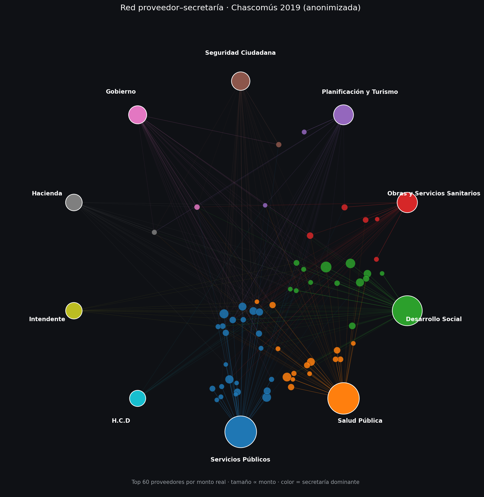

Proyecto de portfolio. Los nombres de proveedores fueron reemplazados por códigos (PROV-XXX) para preservar su anonimato; las secretarías se muestran con su nombre real. El municipio no se identifica por nombre. La estructura, montos y proporciones son reales.
La base cruda repite el importe de una orden en cada línea de descripción que la compone. Sumar la columna tal cual infla el gasto real en más del doble.
Metodología: se reconstruyó el número de orden con relleno hacia adelante (las líneas de detalle heredan el folio de su orden) y se deduplicó por (orden, proveedor, importe) para aislar el monto real de cada compra. Estas cifras son globales — no cambian con el filtro de arriba.
Fuerte concentración en el primer tercio del año (enero–abril concentra cerca del 60% del gasto anual reconstruido), seguido de una meseta baja y estable de mayo a diciembre.
Las tres secretarías de mayor volumen concentran cerca del 82% del gasto real — un patrón de concentración que coincide con lo que identificó el informe original de análisis de redes sociales (ARS) sobre el mismo período, donde esas mismas tres secretarías aparecían como las comunidades centrales de la red de compras. Hacé clic en una fila para filtrar todo el tablero por esa secretaría. El HHI mide qué tan concentrado está el gasto en pocos proveedores (0–10.000; <1.500 baja, 1.500–2.500 moderada, >2.500 alta).
146 de los 616 proveedores (24%) tuvieron una única orden en todo el año — el mismo recorte de proveedores marginales que aísla el informe ARS para simplificar la red. Acá, en cambio, el foco es la punta superior de la distribución.
| # | Proveedor | Monto real | Órdenes |
|---|
Reconstrucción de la red bimodal proveedor–secretaría (top 60 proveedores por monto real, siguiendo el recorte metodológico del informe original de ARS 2019). Layout radial: las secretarías (con su nombre real) se ubican en el anillo exterior; cada proveedor —identificado por código, para preservar su anonimato— se posiciona cerca de su secretaría dominante, y más cerca del centro cuanto más secretarías distintas le compraron.
